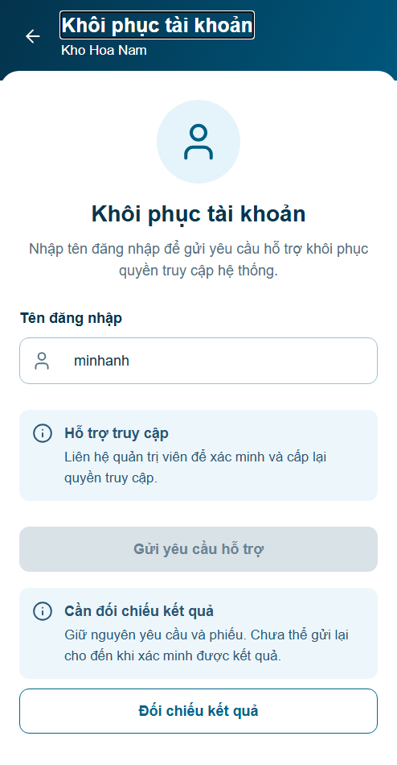
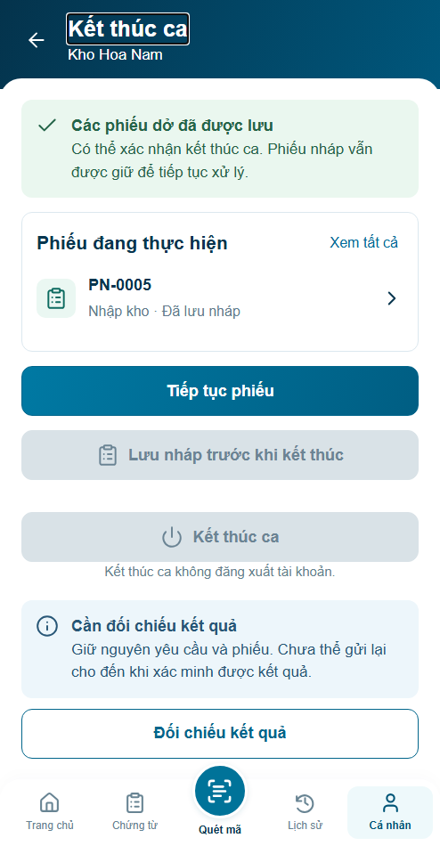
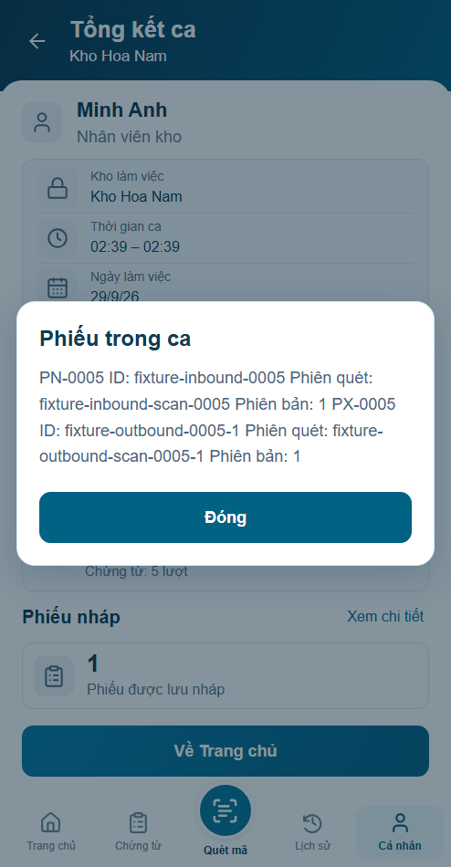
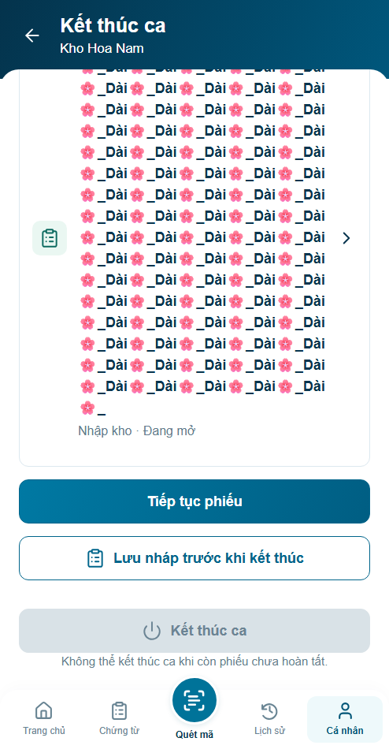
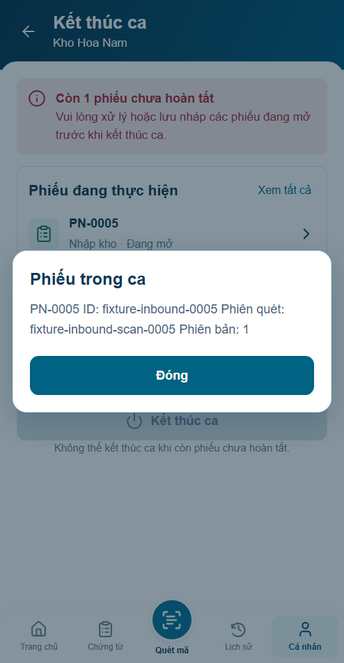

S01 · Copy UNKNOWN đang nhắc tới phiếu

Chưa sửa giao diện. Ưu tiên: thông báo UNKNOWN nhất quán; tổng kết cùng snapshot; dữ liệu dài và Back giữ ngữ cảnh.
Báo cáo lỗi và phương án khắc phục





Ảnh stress mã dài là dữ liệu browser test riêng. Màn mặc định giữ shell494×950, footerLOCK. API/hardware chưa nghiệm thu.